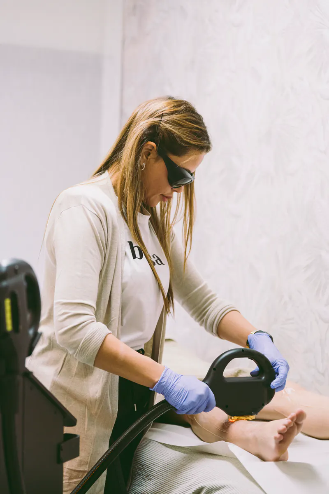

- Inicio
- Medicina estética corporal
Medicina estética corporal
Procedimientos médicos para el cuidado del cuerpo, siempre tras una valoración y dentro de un plan con seguimiento.

- Enfoque
- Plan médico personalizado
- Primera visita
- Valoración médica
- Tecnología
- Láser Cynosure · Carbtek
- Dónde
- Sant Cugat del Vallès
Cuidar el cuerpo, con criterio médico
Los procedimientos médicos corporales principales de BELSA.
- 01Ver ficha
Depilación láser
Depilación láser con Alejandrita y Nd:YAG de Cynosure: dos longitudes de onda para adaptarnos a tu tipo de piel y de vello.
Depilación láser Alejandrita en Sant Cugat
- 02Ver ficha
Carboxiterapia
Infiltración controlada de CO2 medicinal para trabajar celulitis, flacidez, estrías u ojeras, dentro de un plan médico con seguimiento.
Carboxiterapia para celulitis en Sant Cugat
- 03Ver ficha
Medicina íntima
Rejuvenecimiento vaginal y engrosamiento de pene, en una consulta médica confidencial donde puedes preguntar todo con tranquilidad.
Rejuvenecimiento vaginal en Sant Cugat
En BELSA realizamos un catálogo médico-estético muy amplio. Aquí mostramos los tratamientos principales; si buscas otro, pregúntanos por WhatsApp y te orientamos.
Cómo trabajamos
Cada tratamiento sigue el mismo orden. Primero entendemos, después proponemos y solo entonces actuamos.
- EscucharQué te gustaría mejorar y qué no quieres cambiar.
- ValorarValoración profesional de la zona y de tu historia.
- PersonalizarUn plan por escrito, con sesiones y presupuesto.
- AcompañarRevisión de la evolución y ajustes cuando hace falta.
Preguntas frecuentes
¿Qué tratamientos de medicina estética corporal hacéis?
Entre los principales: depilación láser, carboxiterapia y medicina íntima (rejuvenecimiento vaginal y engrosamiento de pene).
¿En qué se diferencia de la estética corporal?
La medicina estética corporal incluye procedimientos médicos. La estética corporal agrupa tecnologías no médicas, como LPG o la presoterapia.
¿Necesito una valoración médica?
Sí. Todo procedimiento médico empieza por una valoración personalizada.
Otras especialidades
Cuéntanos qué necesitas.